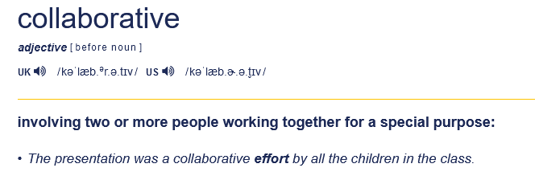
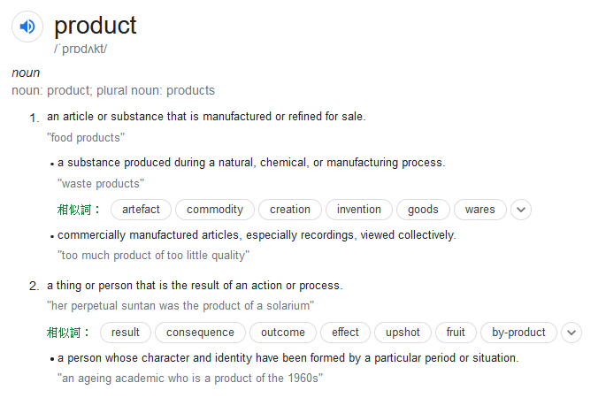
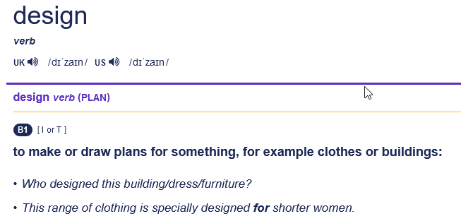
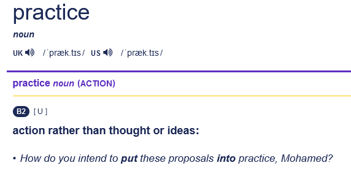

About <<
Previous Next >> 分組協同
Topics
課程簡介
從英文單字解釋了解何謂協同? 產品? 設計? 以及實習?
針對 Leo Editor 6.3 在 Windows 10 無法正確建立 home/.leo/.leoID.txt, 因此必須手動建立:
為了讓各階段分組協同產品設計實習過程, 可以利用網誌建立特定時間點的設計報告資料, 特別利用 Leo Editor 設定 CMSiMDE 中的 Pelican 網誌, 並以 button 指令對 Pelican Markdown 檔案轉檔, 並將網誌超文件存入 blog 目錄:
為了因應協同設計過程, 特定檔案可能在 Leo Editor 以外的編輯流程中改版, 且該檔案並未導入 Leo Editor 中進行編輯, 則使用者可以透過 refresh from disk 的功能將外部檔案的內容導入:
為了順利完成 W2-W4 以自選組員方式進行分組協同產品開發實習, 必須在各班取得分組名單 (以學號為依據) 以及各班組序, 若採用 Ethercalc 網際共用表單, 讓各班以線上同步分式輸入各組名單並設法訂定組序, 則可以採用全人工輸入與排序方式或人工輸入且程式自動排序方式進行, 以下嘗試透過 https://pypi.org/project/ethercalc-python/ 讀取 Ethercalc 表單中的資料, 並設法進行排序, 且期望能自動產生可直接輸入 CMSiMDE 網頁的方式進行:
以下則說明如何利用程式方法建立各班相關分組與組員網站連結 html 檔案.
根據第一階段的分組要求, 嘗試採電腦程式執行的方式完成分組與排序, 目前結果如下:
討論:
在無其他同步或非同步網際程式工具輔助下, 若採用 Ethercalc 以網際同步方式可取得各分組的學員學號, 但因無自動定組序的方法 (可類比至後續若要設法導入自動化流程讀取各組的分組網站, 則必須設法讓電腦程式可以讀取各分組的分組網站內容), 因此需要人工介入訂定組序並收集各組分組網站的連結並發布在網際環境中, 目前所面臨的問題是, 除了各組兩名組員可自選外, 其他流程 (定各班組序, 取得各班分組網站連結並自動嵌入預定的 content.htm 檔案中) 都希望以自動化方式完成.
目前已知 ethercalc-python 可協助讀取特定的 Ethercalc 表單, 以下列程式為例, 因為利用 Python 的 set 去除各列中重複的 None 值, 但因 set 資料的特性是 unordered, 因此雖達成去除重複資料的目的, 但卻弄亂原先的資料順序, 因此或可採直接讀取 Ethercalc 表單資料後, 依照各行固定位置的學員學號 (第二與第三行資料), 並設法忽略中間的空白列 (row) 內容後, 再與最終的各班選課名單 (透過 https://github.com/mdecourse/nfulist 讀取資料) 進行比對後 (因其中可能包含未自選組員的情況, 則必須由電腦進行自動配對), 再進行各班組序的訂定, 並依各組組序與組長 Github 帳號 (如何取得?), 自動產生各組的分組倉儲連結與分組網站連結後, 設法產生對應的 html 資料後, 再設法嵌入指定的 content.htm 中.
特別注意: 只有在上課時段, http://140.130.17.17:8000 Ethercalc 主機才會開啟, 各組若要自行建立測試用的 Ethercalc 主機, 請參考: http://mde.tw/cad2020/content/Ethercalc.html
#!/usr/bin/env python3
import ethercalc
import pprint
pp = pprint.PrettyPrinter(indent=4)
e = ethercalc.EtherCalc("http://140.130.17.17:8000")
output = e.export("h9qd54jy0kfp")
for i in range(len(output)):
#print(output[i])
# 設法除掉 None element
soutput = set(output[i])
print(soutput)
且從甲班表單取回的資料如下:
{'member 2', 'member 1', 'member 3', '2a cad2021'}
{None, 40823145.0, 'stage1-ag1', 40823108.0}
{None, 40623121.0, 'stage1-ag2', 40523252.0}
{None, 40623234.0}
{None, 40423113.0}
{'stage1-ag5', 40823106.0, None, 40823102.0}
{None}
{None}
{'stage1-ag9', 40823112.0, 40823109.0, None}
{None, 40823139.0, 'stage1-ag10', 40823111.0}
{None, 40823129.0, 'stage1-ag11', 40823149.0}
{'stage1-ag12', 40823107.0, None, 40823103.0}
{None, 40823115.0, 40823140.0, 'stage1-ag13'}
{40823104.0, 'stage1-ag14', 40823101.0, None}
{None, 'stage1-ag15', 40823150.0, 40823119.0}
{40823120.0, 40823124.0, None, 'stage1-ag16'}
{None, 'stage1-ag18', 40823122.0, 40823117.0}
{40823132.0, 40823125.0, 40823110.0, 'stage1-ag19'}
{40823128.0, 'stage1-ag20', 40823126.0, None}
{None, 40823146.0, 40823114.0, 'stage1-ag19'}
{40823144.0, 'stage1-ag20', 40823142.0, None}
{None, 40823121.0, 'stage1-ag21', 40823135.0}
{40823136.0, 'stage1-ag22', 40823123.0, None}
{None, 40823148.0, 'stage1-ag23', 40823127.0}
{40823152.0, 40823153.0, 'stage1-ag24', None}
{None, 40871106.0, 'stage1-ag25', 40823151.0}
{None, 40823131.0, 'stage1-ag26', 40823116.0}
而從乙班表單取回的資料如下:
{'member 3', None, 'member 1', 'cd2021 2b', 'member 2'}
{None, 'stage1-bg1', 40823251.0, 40823245.0}
{None, 40823234.0, 40823235.0, 'stage1-bg2'}
{None, 40823207.0, 40823206.0, 'stage1-bg3'}
{40723128.0, 40723215.0, None, 'stage1-bg4'}
{None, 'stage1-bg5', 40823218.0, 40823238.0}
{None, 'stage1-bg6', 40823225.0, 40823214.0}
{None, 40823236.0, 40823212.0, 'stage1-bg7'}
{40823208.0, 'stage1-bg8', None, 40823246.0}
{None, 40823201.0, 40823217.0, 'stage1-bg9'}
{40723106.0, 40723139.0, 40723143.0, None, 'stage1-bg10'}
{None, 40823239.0, 'stage1-bg11', 40823205.0}
{'stage1-bg12', 40823202.0, 40823203.0, None}
{'stage1-bg13', None, 40823223.0, 40823224.0, '^'}
{None, 'stage1-bg14', 40823242.0, 40823228.0}
{40823216.0, 40823211.0, 'stage1-bg15', None}
{40823237.0, 'stage1-bg16', 40823221.0, None}
{None, 'stage1-bg17', 40823250.0, 40832244.0}
{None, 40823209.0, 40823210.0, 'stage1-bg18'}
{None, 'stage1-bg19', 40823219.0, 40823231.0}
{40823232.0, None, 'stage1-bg20', 40823213.0}
{40823248.0, 'stage1-bg21', None, 40823247.0}
{None, 40823244.0, 40823222.0, 'stage1-bg22'}
{40723224.0, 40623144.0, 'stage1-bg23', None}
{None, 'stage1-bg24', 40823220.0, 40823204.0}
{None, 40823241.0, 40823227.0, 'stage1-bg25'}
{'stage1-bg26', 40823204.0, None}
{None, 'stage1-bg27', 40723141.0}
{None, 40723233.0, 'stage1-bg28'}
{None, 40823233.0, 'stage1-bg29'}
{None}
{None}
{None}
{None}
{None}
{None}
{None}
{None}
{None}
{None}
{None}
{None}
{None}
{None}
{None}
{None}
{None}
{None}
{None}
{None}
{None}
{None}
{None}
{None}
{None}
{None}
{None, 'WWW'}
創建實體元件是產品設計, 創建數位工具也是產品設計, 不斷提升各種服務品質也是產品設計, 解決設計流程中的重點議題也是產品設計, 產品不分大小與虛實, 只看有沒有價值, 而且該價值能否持續被重用延伸.
對了, 設法激發學生潛力, 令其可以日日進步, 每天生活都陽光普照, 也應該算產品設計, 成敗端看這個產品能否及時養成良好的生活習慣, 吸飽各種有價值的元素, 貼上貨真價實的標籤......
Collaborative
involving two of more people working together for a special purpose.
The presentation was a collaborative effort by all the children in the class.

Product
an article (物品) or substance (物質) that is manufactured or refined (精製或改良) for sale (可供販售).
food produts
可供販售, 表示經過製造或改良的物品或物質, 具有特定價值
a substance (物質) produced during a natural, chemical, or manufacturing process.
waste (廢棄或無用) products
在產品開發過程所衍生的其他內容 (歷程資料或所使用的各種工具與使用方法), 也應視為產品的一環
commercially manufactured articles (物品), especially recordings, viewed collectively.
too much product of too little quality

design
to make or draw plans for something, for example clothes or buildings.
Who designed this building/dress/funiture?
This range of clothing is specially designed for shorter women.

practice
action rather than thought or ideas.
How do you intend to put these proposals into practice, Mohamed?

Intro to Collaborative Design
Collaborative Design
What is Collaborative Design
Why You Should Pursue Collaborative Design to Build Product?
How Collaboration Makes us Better Designers?
The Right Way to Do Collaborative Design
Product Development
Hacking Product Design
About <<
Previous Next >> 分組協同